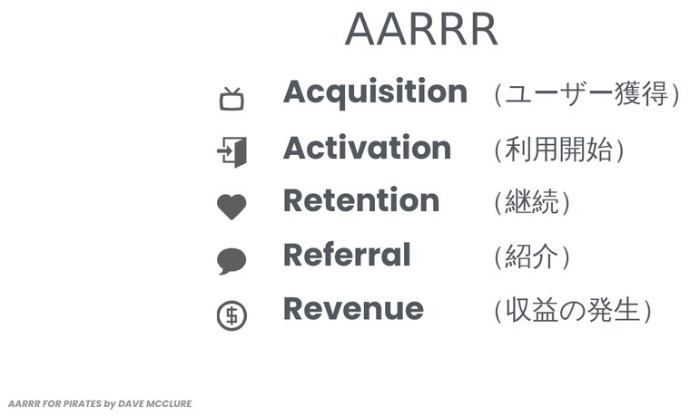
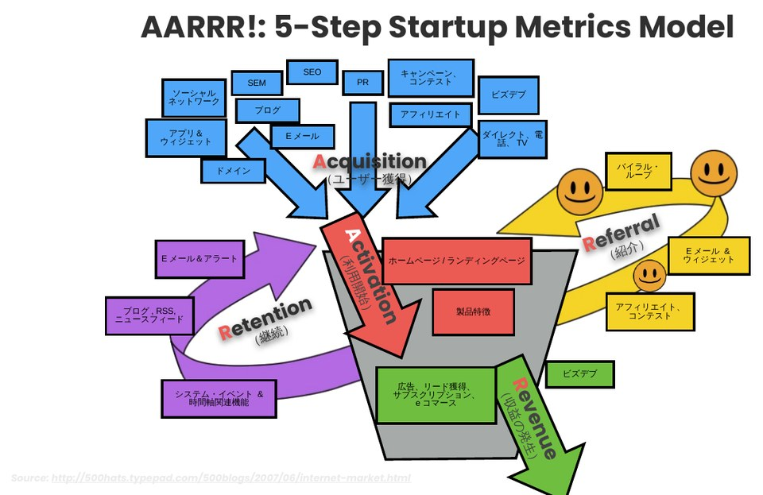
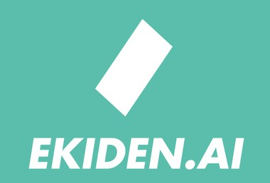
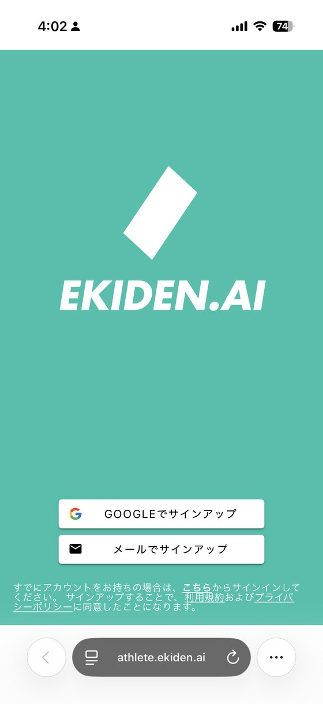
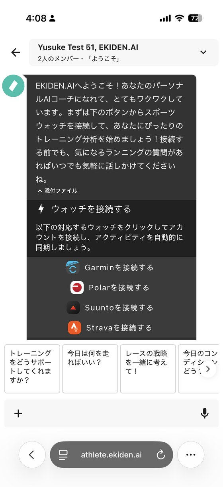
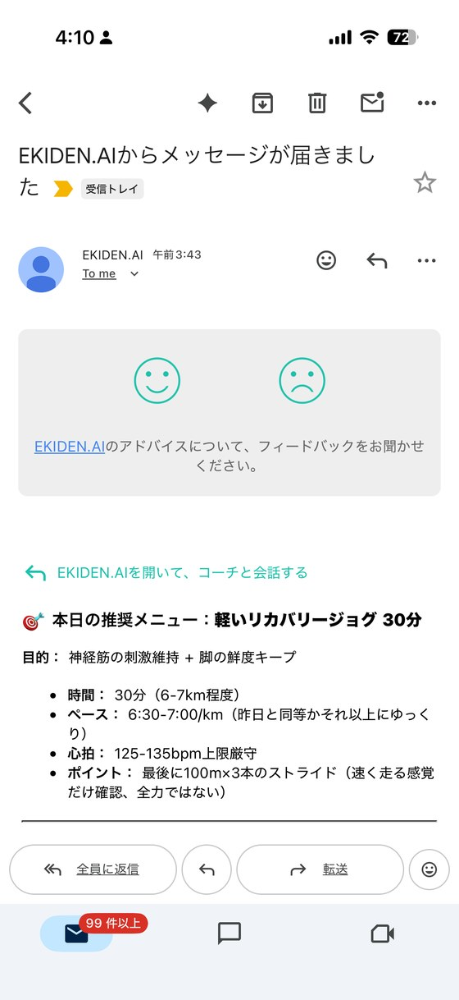
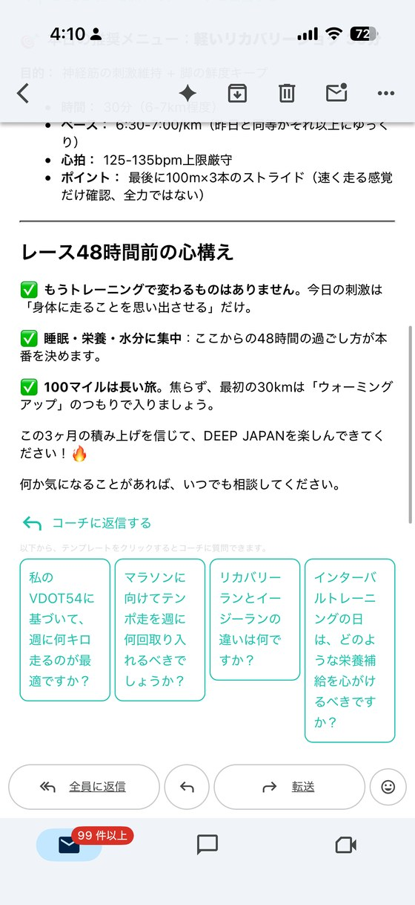

コホート分析とファネル分析
── どこで漏れ、どの世代が離れるか
前回はOMTMと「良い指標の条件」、ファネルの入口を学びました。今日はファネルで“どこで漏れるか”を、コホートで“どの世代が離れるか”を読み、改善の的を1つに絞ります。
全体の平均値は、伸びている世代と離れていく世代を混ぜて見えなくします。
「全体のアクティブ率は、横ばいです」
「本当に？ “世代ごと”に見た？」
5つのステップで「改善の的」を絞る
ファネルを深める
どこで漏れるか（ボトルネック）
コホートとは
世代 × 時間で追う
平均は嘘をつく
なぜコホートが要るか
EKIDEN.AIで読む
ファネル＆コホート演習
改善仮説 → 次へ
次回はA/Bテストで確かめる
ファネル分析とは ── 「漏斗（じょうご）」で離脱を見る
ファネル（funnel）は、英語で「漏斗（じょうご／ろうと）」のこと。上が広く下が狭い形のとおり、ユーザーは上の入口から入り、各段階で一部が離脱し、下に進むほど人数が減っていきます。各段をどれだけの人が通過したか（転換率）を見て、最も漏れている段を見つけるのがファネル分析です。
概念図（教材上の数値例）。AARRR の各段を下るほど人数が減っていく様子。減り方が最も大きい段＝ボトルネック＝最優先で直す候補。
「登録は1,000人もいる！」＝入口（絶対数）だけを見て満足してしまう。
「どの段で、何％が落ちたか」を見て、直す一手を1つに絞る。
AARRR（海賊指標）── ユーザーの道のりを5段階で測る
AARRRは、製品やビジネスと顧客の「接点」を5ステップに整理したフレームワークです。世界中のグロースチームやスタートアップが、成長やマーケティングを考えるときの共通言語として使っています。
提唱者は Dave McClure。PayPal を経て、著名なシードアクセラレーター 500 Startups を創業。頭文字をつなげると海賊の雄叫び「AARRR!」になることから Pirate Metrics（海賊指標）と呼ばれます。HBOドラマ『シリコンバレー』の投資家キャラのモデルとも言われる人物です。

この授業の共通ケース EKIDEN.AI では、獲得 → 活性化 → 定着 → 継続（エンゲージメント）の流れを中心に見ます。（収益＝Stripe の具体データは扱いません）
各ステージの“問い”と、全体像
Acquisition獲得
見込み客に、製品の価値が的確かつスムーズに伝わっているか？
Activation活性化
初回の利用で「良い体験＝価値」に到達できているか？
Retention定着
満足して使い続けてくれる顧客がどれくらいいるか？
Referral紹介
友達を巻き込むほど満足している顧客がどれくらいいるか？
Revenue収益
お金を払うほど満足している顧客がどれくらいいるか？


EKIDEN.AI と、4つの計測イベント
ランナー向けのAIコーチ（オリンピック選手やプロコーチと共同開発）。第2回で設計した4つの計測イベントを、実際の画面とともに確認します。今日の演習はこの4イベントが題材です。

サインアップ
入口に来た。分母の出発点。

ウォッチを接続
最大の価値を体験する最重要行動。

メール開封（コア）
本当に使っているかを映す核。

質疑往復
会話に踏み込み、深い価値を求めるか。
ボトルネックを見つける ── 直すのは「いちばん低い1つ」
ユーザーの道のり（来訪 → 登録 → アクティベーション → コア行動）を段階に分け、各段階の転換率を見ると、最大の漏れ（ボトルネック）が分かります。すべてを直そうとせず、最も低い転換を1つだけ狙います。
どれだけの人数が動いたか。大きな機会かどうかを見る。
各段階の通過率。どこが弱いかを見る。規模が違っても比較できる。
業界平均や属性別と比べ、良し悪しを判断する。
なぜ「いちばん低い1つ」なのか？ ── 一番大きなインパクトを潰すため
ファネルは鎖（チェーン）と同じで、最も弱い輪＝最も低い転換が、最後まで到達する人数（全体のスループット）を決めます。だから、そこを直すと最終到達がいちばん大きく増える。逆に、すでに高い段をさらに磨いても、ボトルネックが残る限り全体はほとんど増えません。
例：最終1段が 36%（150人）。仮にここを 50% に上げると 150 → 約210人（＋約60人）。いっぽう、すでに 70% の段を 80% に上げても、その先の 36% が残るため最終はわずかしか増えません。＝最大のインパクトは「最も低い段」にある。
絶対数 → 率 → 業界平均、と重ねて“真の課題”を確定する実践でした。
「どこで漏れる（ファネル）」に「どの世代が離れる（コホート）」を重ねます。
「いつ始めたか」で束ねて、時間で追う
コホートとは、同じ時期に始めたユーザーの集団です。各コホートを時間で追うと、世代ごとの定着が見えます。下の表は 縦＝開始週、横＝経過週、セル＝その時点でまだ使っている割合を表します。
| コホート（開始週） | W0 | W1 | W2 |
|---|---|---|---|
| 5月 第1週 | 100% | 42% | 28% |
| 5月 第3週 | 100% | 50% | 35% |
| 6月 第1週 | 100% | 60% | — |
横に読む＝その世代の定着の“形”（崖→底）。縦に読む＝世代ごとに良くなっているか（上の表ではW1が 42% → 50% → 60% と改善）。
平均は嘘をつく ── 新規が既存の離脱を隠す
😶集計（平均）で見ると
全体のアクティブ率は“横ばい”に見えがち。新規の流入が既存の離脱を埋めて隠すため、「問題なし」と勘違いしてしまう。
🔍コホートで見ると
各世代の定着の“形”（崖と底）が分かる。後の世代ほど定着が上がっていれば、製品は良くなっている。改善（オンボーディング等）の効果を確認できる。
結論：定着は“平均”ではなく“コホート”で見る。
横で「形」、縦で「進歩」
| コホート（登録週） | W0 | W1 | W2 | W3 |
|---|---|---|---|---|
| 5月 第1週 | 100% | 42% | 28% | 22% |
| 5月 第3週 | 100% | 50% | 35% | 30% |
| 6月 第1週 | 100% | 60% | 45% | — |
| 6月 第3週 | 100% | 64% | — | — |
→ 横に読む＝定着の“形”
W0→W1で大きく落ち（崖）、やがて下げ止まる（底）。底＝離れない“コア”の厚み。崖の深さがオンボーディングの課題を示す。
↓ 縦に読む＝世代の“進歩”
後の世代ほどW1が高い（42→50→60→64）＝製品・体験が良くなっている証拠。改善施策の効果はここで確認する。
「場所（どこで漏れる）」×「時機（いつの世代か）」→ 打ち手
ファネルは場所（段階）を、コホートは時機（世代と時間）を教えてくれます。2つを重ねると、「いつ入った人が、どの段でつまずくか」が分かり、打ち手の的が定まります。
ファネルだけ
「メール開封→質疑往復が弱い」とは分かるが、改善が効いているかは見えない。
コホートだけ
「最近の世代ほど定着が良い」とは分かるが、どの段で離れるかは見えない。
重ねると
「6月以降の世代は“質疑往復”への到達が改善 → 導線変更が効いた」と因果に近づける。
打ち手
弱い段（場所）に、効いた世代の施策（時機）を横展開する。次回はそれをA/Bで検証。
EKIDEN.AI のファネルでボトルネックを探す
サンプルデータです。各段の前段比（転換率）を見て、最大のボトルネックを考えましょう。（教材上の数値例）
EKIDEN.AI のコホートで「世代の進歩」を読む
登録週ごとに、その後どれだけ「メール開封（コア行動）」を続けているかのサンプルです。（教材上の数値例）
| 登録週 | W0 | W1 | W2 | W3 |
|---|---|---|---|---|
| 5/1週 | 100% | 42% | 28% | 22% |
| 5/3週 | 100% | 50% | 35% | 30% |
| 6/1週 | 100% | 60% | 45% | — |
| 6/3週 | 100% | 64% | — | — |
「観察 → ターゲット → 仮説 → 検証」の4ステップ
観察
ファネル×コホートで、漏れる「場所」と離れる「世代」を特定する。
ターゲットを1つ
最大のボトルネック（最も低い転換）を1つだけ選ぶ。
仮説
「○○を変えれば、この転換が△%上がる」と数値で書く。
検証へ
次回、A/Bテストで「効いたか」を因果として確かめる。
良い仮説の形：「誰に・何を変えると・どの指標が・どれだけ変わるはず」。曖昧な「改善する」ではなく、検証できる数値で書きます。
自分のテーマを「ファネル × コホート」で読む
🔁 復習
- 自分のテーマを簡易ファネル化し、各段を「率」で書いて最大のボトルネックを1つ特定する
- 登録週×経過週の簡易コホート表（3世代×3週）を作る
- 観察から改善仮説を1つ、数値の形で書く
📖 予習
- その仮説を「実験」で確かめるなら、何と何を比べるかをメモする
- 教科書のA/Bテスト（実験）の章に目を通す。今回と次回の内容の多くは2章に含まれているので、読んで予習と復習をしておきましょう。
出典：A. クロール＆B. ヨスコビッツ『Lean Analytics』（オライリージャパン）を要約・再構成（逐語引用なし）。ファネル・コホートの数値は教材上の例で、EKIDEN.AI の収益（Stripe）データは扱いません。
EKIDEN.AI の数値でたどる「復習」の解答例（ファネル）
今日扱った EKIDEN.AI のサンプル数値・事例をそのまま使った解答例です。（教材上の数値例）
復習1 簡易ファネル化＋ボトルネックの特定
解答例（コホート と 改善仮説）
復習2 簡易コホート表（3世代 × 3週）
| 登録週 | W0 | W1 | W2 |
|---|---|---|---|
| 5/1週 | 100% | 42% | 28% |
| 5/3週 | 100% | 50% | 35% |
| 6/1週 | 100% | 60% | 45% |
復習3 改善仮説（数値の形）
講師と教科書

計算機科学者・連続起業家。AIx{ } 共同創業。直交化した意味空間に基づく適応的なセマンティック基盤と知識ベースを研究。シリコンバレーと東京でソフトウェアのスタートアップを創業し、プロダクト設計・グロース・顧客開発に従事。500 Startups 出身。慶應義塾大学にて博士（政策・メディア）。
 Lean
LeanAnalytics
オライリージャパン
ISBN 978-4-87311-711-9